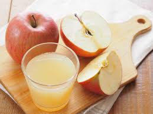
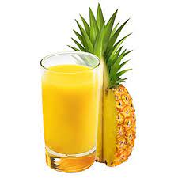

El jugo de naranja es rico en vitamina C, lo que ayuda a fortalecer el sistema inmunol�gico y a prevenir resfriados. Tambi�n es una fuente de antioxidantes que contribuyen a la salud de la piel y al mantenimiento de un coraz�n sano.
Jugo de Manzana

El jugo de manzana es refrescante y delicioso. Adem�s, es una buena fuente de fibra y vitaminas, lo que ayuda a mantener el sistema digestivo saludable y a controlar los niveles de colesterol en la sangre.
Jugo de Pi�a

El jugo de pi�a es conocido por su sabor dulce y tropical. Est� lleno de vitamina C y bromelina, una enzima que puede ayudar en la digesti�n y reducir la inflamaci�n. Adem�s, la pi�a es baja en calor�as y ayuda a mantener la hidrataci�n.
Jugo de Mango
El jugo de mango es una deliciosa fuente de vitamina A, que es esencial para la salud de la piel y la visi�n. Tambi�n es rico en antioxidantes que ayudan a combatir los radicales libres y a proteger contra enfermedades cr�nicas.